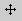
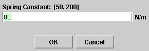

There are four basic control buttons. They are, from left to right:
-
 /
/ Play/Pause. Clicking
Play/Pause. Clicking  starts the
motion.
starts the
motion.
After Play has been clicked, the button will change into the Pause button
 .
.
Click it if you want to take a 'snapshot' of the motion at a given instant. To resume the motion, click Play once more.
-
 Step. Lets you step through the motion in equal
time steps.
Step. Lets you step through the motion in equal
time steps.
-
 Rewind. Resets the simulation to the starting point
with the previously chosen system parameters. After
clicking Rewind, click Play to restart the motion.
Rewind. Resets the simulation to the starting point
with the previously chosen system parameters. After
clicking Rewind, click Play to restart the motion.
-
 Reset. Resets the applet to its default setting.
Reset. Resets the applet to its default setting.
Adjustments in the system parameters can only be made after first clicking REWIND or RESET.


Selecting the Vectors toggle button displays the Vector panel illustrated above. By checking any of the three checkboxes on the panel, different vectors can be displayed. In the example above, the position vector and the velocity vector of the oscillating block are checked, the latter so that it is shown with its tail end fixed at the level of the origin of the y-axis, which is at the block's equilibrium position. These two vectors are shown in the image at the Top.
The following vectors can be displayed:
- position: position vector of the oscillating block; color: cyan
- velocity at origin: velocity of the oscillating block; the tail end of the vector is fixed at the level of the block's equilibrium point; color: magenta
- velocity at block: velocity of the oscillating block; the tail end of the vector is attached to the block; color: magenta


The Data toggle button either displays or hides the Data box shown above. If you click on the Data box and drag, you can move the Data box anywhere on the screen or even off the screen.
The Data box lists the following data.
Top half. Constants of the motion and initial values.
- A: amplitude
- w: angular frequency
- d: phase angle; equal to q(0) (see below)
- y(0): displacement from equilibrium of the oscillating weight at t = 0
- vy(0): velocity of the oscillating block at t = 0
- PE(0): potential energy of the oscillating block at t = 0
- KE(0): kinetic energy of the oscillating block at t = 0
- E: mechanical energy of the oscillating block
Note about d and y(0). The phase angle d and the initial displacement y(0) can be chosen before starting the motion by dragging the weight up or down. The initial velocity vy(0), initial potential energy PE(0), initial kinetic energy KE(0), and energy E will be adjusted accordingly.
Bottom half. Values of time-dependent quantities at time t.
- t: time
- q(t): phase angle of oscillating block at time t; the block's displacement y(t) from equilibrium at time t is related to the phase angle and the amplitude A by y(t) = A cos q(t) = A cos(wt + d)
- y(t): displacement from equilibrium of the oscillating block at time t
- vy(t): velocity of the oscillating block at time t
- PE(t): potential energy of the oscillating block at time t
- KE(t): kinetic energy of the oscillating block at time t

The Graphs toggle button will either display or hide the graph panel which lets you select the graphs you want to have displayed. The graph panel is shown below.

The panel lets you select three states for each of the graphs of the following five quantities: position, velocity, potential energy, kinetic energy, and mechanical energy:
-
 Visibility
checkbox. When this is selected, the graph of the
respective variable will be displayed.
Visibility
checkbox. When this is selected, the graph of the
respective variable will be displayed.
With check marks as in the panel illustrated above, the position and velocity graphs will be displayed.
-
 Move graph
checkbox. When this is selected, the graph of the
respective variable can be dragged anywhere in the
applet window.
With check marks as in the panel illustrated above, the position graph can be moved.
-
 Reset graph
button. When this button is clicked, any graphs of
the respective variable will be erased, but the axes
will remain visible.
Reset graph
button. When this button is clicked, any graphs of
the respective variable will be erased, but the axes
will remain visible.
In each graph, the time t on the horizontal axis is in units of seconds (s). The time axis has divisions that are fractions of p, e.g., p/4. These indicate fractions of seconds, e.g., p/4 s. These divisions do not indicate fractions (or multiples) of radians.

The Zoom toggle button lets you vary the size of the vectors and graphs between standard and reduced size. The size reduction will affect position, velocity, potential energy, kinetic energy, and mechanical energy as follows.
- Position Vector: no reduction.
- Velocity Vector: reduction by a factor of 2.
- Potential Energy: reduction of the graph by a factor of 2.
- Kinetic Energy: reduction of the graph by a factor of 2.
- Mechanical Energy: reduction of the graph by a factor of 2.
The energy bar is not affected by the Zoom button because it does not grow beyond the bounds of the window.

There are three sliders in all. They are described below, in the order from left to right.
You can adjust a slider setting either by dragging the slider tab or by entering an exact value in the slider input dialog.
To enter an exact value, click on the Input Dialog button
 of the slider to open the dialog. The
dialog for the k-slider is illustrated below. The
range in which values can be entered, from 50 N/m to 200 N/m
in this case, is indicated above the data entry field.
of the slider to open the dialog. The
dialog for the k-slider is illustrated below. The
range in which values can be entered, from 50 N/m to 200 N/m
in this case, is indicated above the data entry field.

Clicking on a slider to the left or right of the slider tab allows fine adjustment of the slider setting.
-
Spring Constant Slider. This slider lets you adjust the spring constant k in the range from 50 N/m to 200 N/m, in steps of 1 N/m..
When the spring constant is increased, the spring shortens. This is simulated in the applet. Also the wires of the spring are shown to be getting thicker.
Note that the suspension point of the spring is at a point above the applet window and therefore invisible. Also, the applet is designed to keep the equilibrium point of the block at a fixed point in the applet window. Thus, changes in the length of the spring will be apparent from turns of the spring either moving into view or out of view at the top of the applet window.
-
Mass Slider. This slider lets you adjust the mass m of the oscillating block between 0.50 kg and 2.00 kg, in steps of 0.01 kg.
Changes in the mass are indicated by the size of the block attached to the spring. They also cause the spring to contract or lengthen depending on whether the mass is decreased or increased, respectively. Changes in the length of the spring are simulated as described above in connection with the spring constant slider.
-
Amplitude Slider. This slider lets you adjust the amplitude A of the oscillation in the range from 0.10 m to 0.30 m, in steps of 0.01 m.
A vertical column in the lower right-hand corner of the applet window displays the potential energy PE of the oscillating block in blue and the kinetic energy KE in red.
The potential energy is taken to be zero when the block is at its equilibrium position. The zero energy level is at the bottom of the applet window.